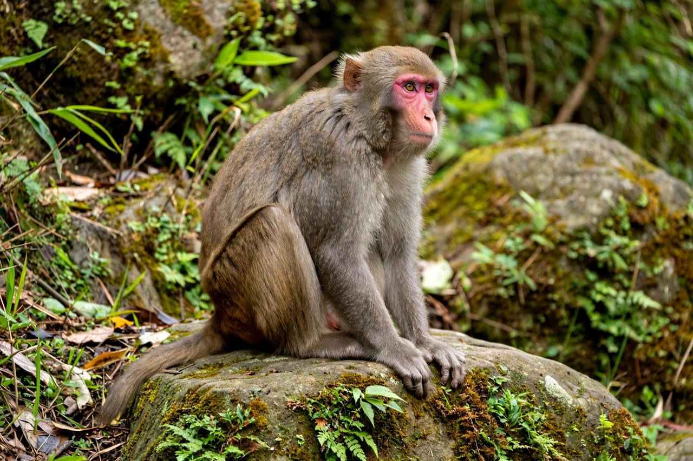

| Rhesus macaque | |
|---|---|
| Scientific name | Macaca mulatta |
| Order | Primates |
| Family | Cercopithecidae (Old World monkeys) |
| Conservation status | Least Concern (IUCN) |
| Range | South, Central and Southeast Asia; introduced populations in Florida and elsewhere |
| Head–body length | 47–64 cm; tail 19–30 cm |
| Mass | Males ~7.7 kg; females ~5.3 kg |

The rhesus macaque (Macaca mulatta), colloquially rhesus monkey, is a species of Old World monkey. It has the widest geographic range of any non-human primate, occupying a great diversity of altitudes and habitats — from grasslands to arid and forested areas — across South, Central and Southeast Asia, and it also thrives commensally in human settlements and temple precincts. The rhesus macaque is brown or grey in colour, has a pink face, and is characterised by its high intelligence, social complexity and adaptability. It is one of the best-known laboratory animals in science.
Native populations range from Afghanistan and northern India through Nepal, Bangladesh, Myanmar, Thailand, Laos, Vietnam and southern China. Rhesus macaques are equally at home in lowland forest, mountain slopes up to about 4,000 m in the Himalayas, and the hearts of cities, where they are often fed — and venerated — at Hindu temples. Feral populations established from released or escaped animals persist in Florida (notably at Silver Springs) and on islands off Puerto Rico such as Cayo Santiago, founded in 1938 as a research colony.
Rhesus macaques live in troops of 20 to more than 100 individuals organised around matrilineal hierarchies: females remain in their natal troops for life and inherit rank from their mothers, while males disperse at maturity. Communication is rich, involving facial expressions, body postures and a repertoire of calls and screams. They are strong swimmers and principally diurnal, feeding on fruit, seeds, roots, insects and small animals, and opportunistically raiding crops and refuse. Their cognitive abilities — including numerical competence, theory-of-mind precursors and social learning — have made them central subjects in psychology and neuroscience.
The rhesus monkey gave its name to the Rh factor in human blood, discovered through experiments in 1937–1940. Rhesus macaques were test subjects for vaccines including the polio vaccine, and a rhesus monkey named Albert II became one of the first primates in space in 1949. In 2000, Tetra became the first cloned primate; in 2001, ANDi, the first transgenic primate, was created. The rhesus genome was sequenced in 2007, revealing about 93% sequence identity with humans. Their use in biomedical research — including HIV/AIDS (via the SIV model), neuroscience and COVID-19 vaccine development — remains significant and ethically debated.
The species is listed as Least Concern because of its wide range and tolerance of human-modified landscapes, but populations face local pressure from habitat loss, trapping for the pet and laboratory trades, and conflict with humans over crop raiding. In India they are protected under wildlife law and benefit from religious tolerance, though urban troop management is an ongoing challenge.